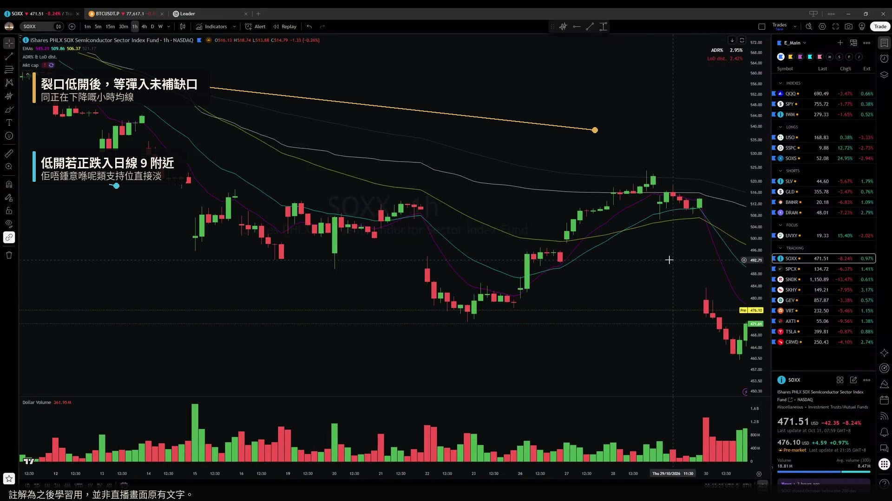
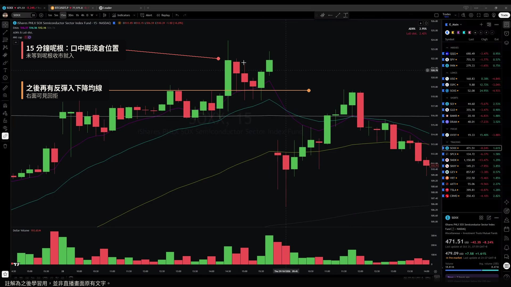
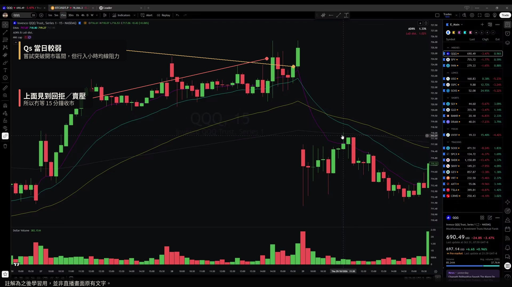

概要
低開跌入日線 9 唔淡，等彈入缺口先做
週四開市裂口向下，但係跌入日線 9 EMA 呢類潛在支持，佢唔鍾意在呢啲位置放淡。於是改為等反彈、睇會唔會回補缺口；主要用小時圖。開市頭一小時佢唔在檯前，回來時見到大市推入下降中嘅小時 9，亦推入呢個未補缺口，覺得係週三已經計劃好嘅淡倉機會。之後等 15 分鐘跌破，並在其中一根 15 分鐘 K 入場；同時睇 Qs，週四 NASDAQ 較弱。Qs 嘗試突破開市區間高位，但實際係升入小時均線阻力，上面見到回拒同賣壓，所以佢冇等呢根 15 分鐘收市。
圖一 · 主圖
裂口低開後，等彈入未補缺口同下降小時均線
直播 23:45

原話
So on Thursday, I think at the open it's gapping down, but it's gapping down into the daily 9 EMA, which to me is like a potential support level that I don't like to place my short at those levels. So I keep waiting for the bounce, potentially on this gap fill, because it's gapping down, and if we can try to rally into this unfilled gap level. I was looking for the hourly chart mostly. And also I'm not at the screen on the first hour of the market, because I'm just not at my table. So I think it's also really nice that I skip the first hour, then I don't need to deal with the chop in the first 60 minutes after the open. So when I return, I'm seeing the market is pushing into the declining hourly nine and also pushing into this unfilled gap. So to me I just come into the desk with a very fresh mind and I think this is a really good short opportunity that I've already planned on Wednesday. I never changed my plan, my view.
週四開市我記得係裂口向下，但係跌入日線 9 EMA，對我嚟講呢類係潛在支持，我唔鍾意在呢啲位置放淡。所以我繼續等反彈，睇會唔會回補呢個缺口。我主要係睇小時圖。開市頭一小時我唔在檯前。其實錯過第一小時都幾好，就唔使應付開市後頭 60 分鐘嘅上落。我返嚟嘅時候，見到大市推入下降中嘅小時 9，亦推入呢個未補缺口。所以我係帶住好清嘅頭腦坐低，覺得呢個係週三已經計劃好嘅淡倉機會。我嘅計劃同睇法一直冇改。
點樣讀
低開唔等於即淡：若裂口正跌入日線 9，佢當係支持，反而要等彈入缺口同下降小時 9。
「跳過第一小時避開開市上落」係佢當日嘅做法，唔好當成規則。
圖二
15 分鐘呢根：口中嘅淡倉位置
直播 26:10

原話
And then I keep waiting for like the 15 minutes breakdown, and then I think I shorted on this 15-minute candle, as I also look at the Qs as well. So NASDAQ is weaker on that day on Thursday. I didn't wait for the close on this 15-minute candle.
跟住我繼續等 15 分鐘跌破，然後我記得係在呢根 15 分鐘 K 淡咗，因為我亦有睇 Qs。所以週四當日 NASDAQ 係較弱嘅。我冇等呢根 15 分鐘收市。
字幕後半有一句聽唔清嘅口誤；入場同「冇等收市」以畫面同較清楚嘅對白為準。
點樣讀
15 分鐘係執行時間框架：等跌破，但實際係在呢根 K、未等收市就入。後面再彈入下降均線並回拒，係事後可見嘅走勢，唔好當成當日已經講完嘅預測。
圖三
Qs 當日較弱：升入小時均線就回拒
直播 27:20

原話
So the Qs is going sideways, and on this candle is trying to break out on this opening range highs or this intraday range. So this is the breakout candle, but it's actually rallying into the hourly EMAs, the resistance, and also like the 15-minute resistance as well. So after I saw some rejection, some selling up here, I didn't wait for the close on this 15-minute candle.
所以 Qs 係橫行，而呢根係嘗試突破開市區間高位、或者當日區間。呢根看似突破，但其實係升入小時均線阻力，亦有 15 分鐘阻力。所以當我見到上面有回拒、有賣壓，我就冇等呢根 15 分鐘收市。
YouTube 把 “the Qs” 聽成 “the kill is the Q”，把 “15-minute resistance” 聽成 “50 minutes resistance”。本站按畫面同上下文更正。
點樣讀
指數確認好重要：Qs 看似突破開市區間，但目標正正係小時均線阻力。見到回拒，就唔再等 15 分鐘收市。
呢啲係當日執行嘅描述，唔係叫人用同一觸發去複製。
附註
注意事項
- 呢一段多數係回放週四嘅圖，不是當時即場下單畫面。倉位、成交價同損益都睇唔到，唔寫死。
- YouTube 把 Qs、15-minute resistance 聽錯；本站按畫面更正。
免責聲明：呢份係教育拆解，唔係投資建議，亦唔好當作買賣指示。